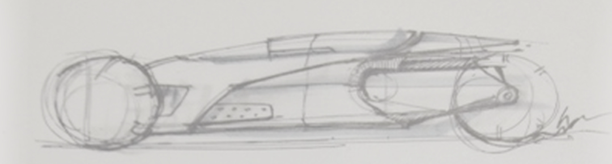
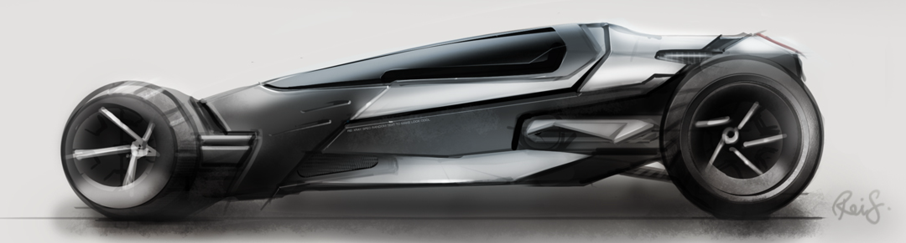
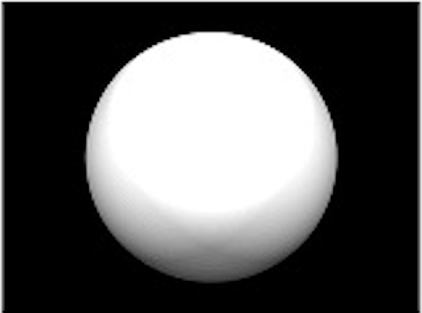
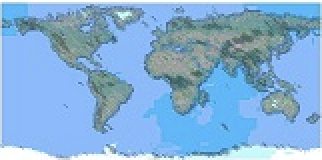
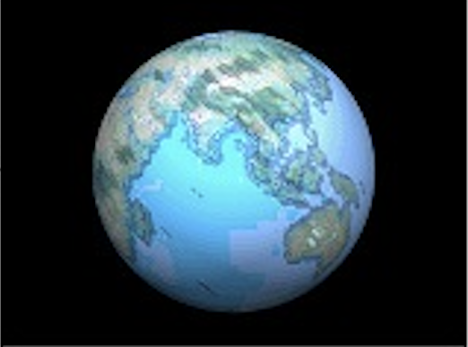
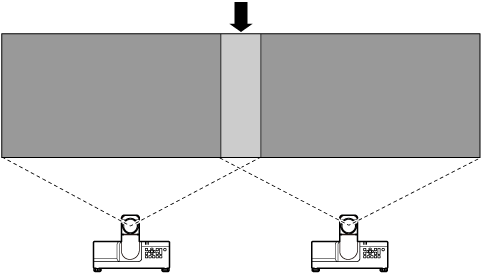
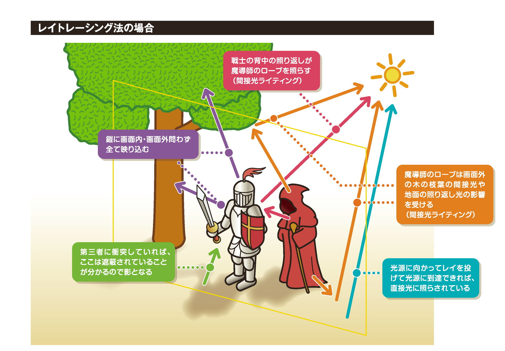
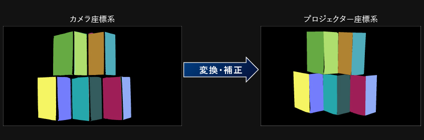

方法論
プロジェクションマッピングは、主に投影対象の表面に映像素材を配置し、貼り合わせる技術（マッピング）を利用し、平面画像を立体物に貼り付けリアルに見せる技術である。
画像を投影するには ソフトウェアの技術が必要不可欠であり、さまざまな技術が利用されている。
ソフトウェア技術
-
レンダリング
プロジェクションマッピング等に使用される動画や画像、CGを抽象的な線などのデータやコンピュータ言語などを用いて生成する技術であり、映像技術の中核を担う技術である。この技術により下記に示すマッピングやレイトレーシングなどの技術を活用することができる。
 
-
マッピング
プロジェクションマッピングの中心となる技術であり、主に作成された画像・動画を凹凸のある構造体に違和感のないように貼り付ける技術です。 実際の貼り付ける物体の形状に映像素材を正確に合わせるために投影する物体の詳細なモデリングとレンダリングを3DCGで行い、テクスチャマッピングとバンプマッピングを行う。
テクスチャマッピングとは、3DCGでモデリングされた物体に対して、単色の塗りつぶしでは表現できない質感を与える技術であり、プロジェクションマッピングでは、二次元の画像貼り付けではなく三次元空間で座標変換し投影したい画像や動画を物体に合わせる。
  出典：マルチメディア
-
エッジブレンディング
最終合成後に前景オブジェクトのエッジを背景プレートにブレンドすることで、合成されるオブジェクトのエッジが自然なものとなるため、画像と画像の境目をより自然に繋げることができる。 簡単に言えば、前のオブジェクトと後ろのオブジェクトの境界をぼやかし馴染ませる技術。 この技術は、大規模なプロジェクションマッピングにおいて、プロジェクターを2台以上利用する際に、プロジェクター間の画像の切れ目を目立たなくすることでみている人の没入感の妨げにならないように利用される。

-
リアルタイムレイトレーシング
光線に反射を再現しCGを作成するレイトレーシングを改良したパストレーシングとダイナミックプロジェクションマッピングに統合した技術であり、2020年に東京工業大学から発表された。 ダイナミックプロジェクションマッピングとは、高速で移動する物体（ダンサーやドローンなど）に対して映像投影を行うことである。 この技術は、モーションキャプチャを利用し動く物体の位置などの情報を得て、その物体に対し、光の点滅が認識できない程の速さで高速投影を行うと、残像が連続光に見えることを利用して、低遅延かつ、リアルな質感を持つ映像を動く物体に対し、投影をすることができる技術である。
出典：最近よく聞く「レイトレーシング」一体ナニモノ？キャリブレーション
マッピングとは違い、画像が投影対象物に対しピッタリと合うように細かい調整を行うのとともに、プロジェクター間での環境光の影響を考慮し色彩や輝度を調整するなどの、プロジェクションマッピングにおいて、細かな調整を行う手法である。 特に、色彩と輝度のキャリブレーションにおいて、複数のプロジェクターが重なって投影してしまう地点の明るさを調整することで、過剰な明るさ（ホットスポット）を防ぐ役割や、環境光の影響や、各プロジェクターの特性によって異なる色温度や色再現性を均一に保つために利用される。 
比較
プロジェクションマッピングと他の映像投影技術の比較を行う。
1. プロジェクションマッピング
メリット: 高い演出インパクトにより、観客を驚かせる演出が可能。
デメリット: コスト効率や設置の容易さが劣る。視認性や利用シーンの多様性は条件次第。
使用例: 建物やイベント会場の壁面を使った大規模なイベント。フェスティバルや企業の新製品発表会。
2. LEDスクリーン
メリット: 優れた視認性により、屋外や昼間でもクリアな映像表示が可能。演出インパクトも高い。利用シーンの多様性が高い。
デメリット: コスト効率と設置の容易さに難がある。
使用例: スポーツイベントのライブ中継。屋外広告やデジタルサイネージ。
3. ライトショー
メリット: コスト効率が良く、準備が比較的容易。
デメリット: 演出インパクトや視認性がやや控えめ。利用シーンの多様性も限定的。
使用例: 音楽フェスティバルでの演出。ナイトイベントやイルミネーション。
4. AR（拡張現実）
メリット: 高い利用シーンの多様性で、様々な分野で応用可能。視認性や演出インパクトも優れている。
デメリット: コスト効率や設置の容易さは条件次第。
使用例: 観光地でのARガイド。教育現場でのインタラクティブ教材。モバイルゲームやアプリ
5. 通常のスクリーン投影
メリット: コスト効率や設置の容易さが非常に高い。比較的幅広いシーンで利用可能。
デメリット: 演出インパクトや視認性は高くない。
使用例: 会議やセミナーでのプレゼンテーション。映画上映や教育用映像の再生。
6. 3Dホログラム
メリット: 圧倒的な演出インパクト
デメリット: コスト効率、視認性、設置の容易さすべてが劣る。利用シーンの多様性も限定的。
使用例: 科学館や博物館での展示。ハイエンドな商業イベントやエンターテイメントショー。
比較表
◎：極めて優れている ○：優れている △：条件次第で妥当 ×：劣る手法 コスト効率 視認性 設置・準備の容易さ 演出インパクト 利用シーンの多様性 プロジェクションマッピング × △ × ◎ △ LEDスクリーン × ◎ △ ◎ ○ ライトショー ○ △ ○ △ △ AR（拡張現実） △ ○ △ ○ ◎ 通常のスクリーン投影 ◎ △ ◎ △ ○ 3Dホログラム × × × ◎ △ 参考文献
REFERENCES